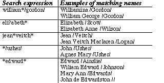

| Program: | GenMVD |
| Version: | 2.00 |
| Release date: | January 2000 |
| Platforms: | Psion 3a/c/mx/Siena, Acorn Pocketbook II |
| Programmer: | Martin N Dunstan (mnd@dcs.st-and.ac.uk) |
| Designer: | Vivienne S Dunstan (viv.dunstan@one-name.org) |
| Web page: | http://www-theory.dcs.st-and.ac.uk/~mnd/export/genmvd/ |
| Status: | Shareware (see Section 1.7 below) |
This section provides an overview of GenMVD, instructions on how to install it and a brief tutorial on how to use it. Please take time to read at least the whole of this section before diving into GenMVD. If you have any problems installing or using GenMVD please refer to this manual before asking the authors for help. This will hopefully solve your problem much more quickly!
Existing users must refer to Section 1.6 to find out how to upgrade. This is especially important if you have already registered an earlier version of the program and need to carry over your registration details into GenMVD 2.00.
GenMVD is a fully-fledged genealogical database browser created for the Psion 3a/c/mx and Siena. It will also work on the Acorn Pocketbook II but not the original Psion 3. GenMVD is designed to be a portable companion to your desktop genealogy program and will enable you to carry your family tree around in a compact and easily accessible format. Since GenMVD was originally designed for large databases (those with more than 5000 people) it ought be quick whatever your size of database. In fact GenMVD is often quicker than the authors' desktop genealogy program!
Please note that GenMVD will not work on the Psion 5, the Geofox One or any of the Psion Workabout machines. Also there are no facilities within GenMVD which will allow you to edit the information stored in it at the present time. Changes to a GenMVD database are only possible by creating a new database from an updated GEDCOM file using Ged2Gen.
The idea for GenMVD was born in April 1996 when the designer purchased a Psion 3a for work and genealogy. Although the built-in applications were more than sufficient for data-gathering she needed a convenient way to access the core information from her 5000-person database on the move, and one retaining the family connections. After checking there was no suitable genealogical program available already for the Psion, we decided to write one of our own. Any application would need to cope with a large number of individuals, be responsive, and make it easy for researchers to distinguish between people with the same name. Scottish naming patterns can replicate the same names over and over again and a detailed knowledge of an individual's ancestry is often necessary to identify them confidently. Because of this, it was decided that the basic display would be an ancestral tree with at least three generations (i.e. back to grandparents). A detailed display showing spouses and children of the current individual would be the other main display. Navigation was to be via simple key-presses, e.g. "f" to jump to the father of the current person.
We considered providing the facility to edit and add new people to the database, but decided against this in the end. In part this was because it would increase the size and complexity of the program considerably, but we were also very much aware of space limitations on palmtop machines, particularly with the larger databases that we were catering for. The model we eventually opted for was to run the palmtop genealogy program as a companion to a desktop genealogy package, adding new information to the desktop program (perhaps with the help of built-in data acquisition tools on the Psion such as the wordprocessor, spreadsheet and database), and then generating GEDCOM files to update the database on the Psion. We anticipated that the Psion program would not normally be updated too frequently, at most once a month. Since processing GEDCOM files would more than double the size of our program and since this would only be done infrequently, we decided that two programs could be written. One would convert GEDCOM into a database and then be deleted. The other would be the browser the user would carry about with them at all times. The result in August 1996 was RdGed (now Ged2Gen) to convert GEDCOM and Geni (now GenMVD) 1.00 the browser.
Since then there have been several major releases of the browser: version 1.10 included a major redesign of the database format and speeded up database accesses many times. Version 1.20 added "zooming", a four generation ancestral tree and use of Psion's inbuilt help system. The last major release was version 1.50: the GEDCOM import was extended so that it was better able to cope with invalid GEDCOM and it also allowed users to specify extra GEDCOM tags (e.g. OCCU for occupation, NOTE for notes etc.) they were interested in viewing within GenMVD, and provided a new third view to display these extra tags. Version 1.50 was also the first version to run on the Siena. Unfortunately the increased functionality of version 1.50 meant that the database format had to be changed and now consists of a small .GNI file along with a directory containing the main database files.
The first step is to decide how you are going to use Ged2Gen. If you have lots of space on your machine and you wish to use Ged2Gen regularly then you can leave it installed on your Psion. However, if you have limited space or if you are going to use Ged2Gen rarely then we would advise you to delete it as soon as you have finished translating your GEDCOM file.
Before installing Ged2Gen or GenMVD make sure that you are are familiar with creating directories (folders) on your Psion and that you know how to copy files onto it. These operations can be done directly on your Psion via the menu on the system screen or via programs like PsiWin or PsiMac. The relevent manuals should give you more details.
Don't install every file: only the ones that the instructions below tell you to!
Before you begin, make sure you have a GEDCOM file ready. We assume in the examples below that it is called MYFAMILY.GED but you can use whatever name you prefer. We strongly urge you to test GenMVD with a GEDCOM file produced by the genealogy program you normally use. If this is not possible then you can use DEMO.GED (which comes with GenMVD) instead.
If everything has worked you should see the icon below:
Under this icon you ought to see the name of your GEDCOM file, indicating that Ged2Gen is now ready to use. If it isn't there press the System button below your Psion's screen and this should reveal the name of your GEDCOM file, if you have followed the instructions above exactly.
Ged2Gen allows you to convert your GEDCOM file into a GenMVD database. Make sure you have installed Ged2Gen and a GEDCOM file as described above. Move to the Ged2Gen icon and select the name of your GEDCOM file from the list below the icon. Press ENTER and after the title screen goes away you will be left with a menu on the screen. For the moment ignore all the other options and just select "Build GenMVD File". You will be asked for the name that you want to give the database: for now just press ENTER so that Ged2Gen uses the same name as your GEDCOM file.
The screen will clear and several progress bars will appear and disappear as the conversion process proceeds. The first bar is called "Indexing" and ought to be quite rapid. The next two progress bars will indicate that Ged2Gen is sorting people and families (if you are lucky this will happen so quickly that you do not see the progress bars). The final and slowest progress bar is described as "Processing". During this phase Ged2Gen creates your GenMVD database. You can pause the conversion process at any stage by pressing a key on your Psion: this will give you the option to continue the conversion process, or to exit it. This facility may be useful if you find that the conversion is taking a little time, and you need to stop it to go and do something else.
After processing, Ged2Gen will tell you how many people and families it found and how long the conversion took. Press the ESCAPE key to leave the program.
Here we describe how to install the basic version of GenMVD 2.00. In Section 3 we show you how to extend the functionality of GenMVD with plugins.
After creating a database using Ged2Gen as described above you can install GenMVD.
If everything has worked you should see the icon below:

The names of any GenMVD databases that you create with Ged2Gen ought to appear below this icon.
After creating a database with Ged2Gen you can try GenMVD. On the System screen use the arrow keys to move to the GenMVD icon and select the name of your database. If it hasn't appeared in the list yet try pressing the System icon on the button-bar. If the database name still isn't there please check you have followed the instructions above precisely.
Press ENTER to start GenMVD and after a pause a window will appear informing you that you have an unregistered program. It will tell you how many browses you have left before you must register the program. For the time being press "N" to skip past the registration process. After another pause your database will be loaded and you will be presented with a three generation ancestral tree of the first person who appears in your GenMVD database.
Hopefully GenMVD is fairly intuitive to use. Try the following sequence of keypresses to get a feel for the program (Section 2 describes these and other available keypresses in more detail):
If you can't get back to the first person in the database use the "Find" option on the menu (press the MENU key to access the menu). A simple trick is to search for nothing, i.e. delete all the text in the "Find" box and press ENTER. This will always get you back to the first person.
Finally: do please remember that you only have a certain number of browses before GenMVD stops working until you register your copy. Hopefully you will quickly see if GenMVD is right for you but do keep an eye on how long you have been using it for just in case you "run out of lives".
Here we tell you how to remove GenMVD or Ged2Gen from your Psion. In Section 1.3 we indicated that it may be useful to remove Ged2Gen after using it. To uninstall Ged2Gen follow these steps:
If you do not need the GEDCOM files then:
To remove GenMVD you the process is very similar:
If you want to delete all the GenMVD databases then:
Alternatively if you just want to delete the database MYFAMILY then:
GenMVD will not create any files other than those above. Note that the directory called \APP\GENMVD is the place where GenMVD keeps its essential files. The \GENMVD directory is where your GenMVD databases are kept. Likewise \APP\GED2GEN is where Ged2Gen keeps its essential files and \GED is where your GEDCOM files are kept.
If you are currently using an earlier version of GenMVD or Geni then most of the files that you installed for that version must be replaced. This is best achieved by uninstalling the version that you are currently using and then installing GenMVD 2.00 in its place.
However, if you do this right away you may end up losing your registration details or find it difficult to return to your current version if, after trying GenMVD 2.00, you decide to return to your earlier version. Please follow the instructions below carefully and the upgrade ought to work smoothly.
Versions 1.20 and earlier are completely different to GenMVD 2.00 and should be treated as different applications. Your registration name and code will still work but you will have to type them in again when you use the program for the first time. If you cannot find your registration name and code then please contact the programmer. Your existing databases cannot be used with version 2.00 but if you have enough room on your Psion you can use both applications separately at the same time. Please follow the instructions in Sections 1.3 and 1.4 to find out how to install version 2.00.
IMPORTANT: this is a really good time to backup your Psion!
Users of versions 1.50, 1.51 and 1.52 may choose to keep their existing databases rather than recreating them with Ged2Gen. If you wish to keep these databases you need to rename the \GENI\ directory on your Psion to \GENMVD\. If you do not wish to keep your existing databases then you may wish to delete \GENI\ and all its contents to save space.
Depending on your current version, copy the file \APP\GENI\GENI.RSC or the file \APP\GENMVD\GENMVD.RSC into a safe place and rename it to GENMVD.RSC if it isn't called this already; this file contains your registration details.
Now that you have safely copied your current GenMVD/Geni installation onto your desktop computer you need to delete any of the following files and directories if they are currently on your Psion. Don't worry if you can't find them all:
You can now restore your registration details. You do this by creating a directory on your Psion called \APP\GENMVD\ and copy GENMVD.RSC into it.
Once this has been done you must proceed with the normal installation process. Follow the instructions given in Sections 1.3 and 1.4 and when you start GenMVD 2.00 for the first time you ought to be registered. If not please register using the name and code that you were originally given. If for some reason you cannot find this information then please contact the programmer (see the top of the page).
GenMVD is shareware: this means that you can install and use the program for a limited time without paying for it. If you decide that you want to continue using it then you must pay the registration fee: you will be sent a special code which will unlock the program. If you do not wish to continue using the program then you must delete it. If you do not do so it will eventually stop working until you pay for it. You are currently allowed to browse 100 times before the program stops working. There is no restriction on the number of times that Ged2Gen can be used.
Important: both GenMVD and Ged2Gen ought to work perfectly even when you have not registered. If for some reason you cannot get either program to work then don't register! Instead please contact the programmer (see top of the page) as soon as possible and explain the problems that you are having. Registering the program will not make the problems go away and you must understand that we cannot return your money once you have registered. After all, you have been able to try it for free to make sure that it is just what you want.
To register you need to follow the instructions given in the REGISTER.TXT file. Please remember to state the name that you want to be registered under: this will appear on the title screen whenever the program starts up. You are allowed to use anything that you can type on your Psion up to a limit of 60 characters.
If you have an email address then please print this clearly on your letter. We will use it to send your registration details to you and we can keep you informed of updates if you wish. We would be grateful if you could let us know if your email address changes otherwise we will not be able to contact you again by email!
This section describes in more detail the different features of Ged2Gen and GenMVD. Once you are familiar with the basic operation of GenMVD it is is time to look at what else it can do.
Let's return to Ged2Gen and see what else it can do. Make sure that you have quit GenMVD and start Ged2Gen again. This section explains the different menu options.
You've already used this: it creates a new GenMVD database. There are a number of settings to control the way that databases are created. These are updated using the "Edit GEDCOM tags", "Change Preferences", and "Foreign Characters" menu options described below.
Note: all settings are remembered between sessions. This can be useful if you always use the same settings, but if you are unsure then you ought to check them before converting a GEDCOM file.
Normally GenMVD only stores each person's name, birth event (date and place) and death event. If the birth date is unavailable then a baptism event will be used insead; likewise the burial can be used instead of the death. However, some users wish to include other information such as occupations, notes or sources. To cater for this, Ged2Gen can be instructed to detect extra GEDCOM tags during the conversion phase, and GenMVD will then display any data found with these tags. This means that people who want to see extra details can choose to do so, while others who do not want to (perhaps because they have a very large database stored on a very small Psion) are not forced to.
If you want to add extra GEDCOM tags then select the "Edit GEDCOM tags" menu option in Ged2Gen. This allows you to edit the extra GEDCOM tags Ged2Gen will detect. A window will appear showing you the current extra tags (initially this window will be blank). Pressing HELP will bring up a list of the keys you should press to add/edit/delete tags. The keys are also listed below:
Each tag should be a given a name (ideally a short one-word description) that GenMVD will use to refer to it. Examples of GEDCOM tags that you might want to use are given below:
| Tag | Name | Purpose |
| TITL | Title | The title of the individual (Mr, Sir, King) |
| OCCU | Occupation | The job that the person did |
| NOTE | Notes | Notes associated with this person |
| SOUR | Sources | Sources where you obtained information from |
| BURI | Burial | The burial event of the person |
| NAME | Name | Some people may have multiple names |
GenMVD will remember the tags you have specified, even if you exit the program. If you ever want to update the tags then use this menu option again.
Ged2Gen looks out for special GEDCOM tags to identify information such as the name of a person and their birth or baptism details. Unfortunately a few genealogy programs do not use the same tags as Ged2Gen does. If your desktop genealogy program is like this, you may find that some people in your GenMVD database are missing birth, baptism or marriage details for example. You can use this menu option to fix the problem by telling Ged2Gen the name of the GEDCOM tag that your program uses for a given Ged2Gen tag.
For example, if your genealogy program uses BAPT and BAPM to represent baptismal events (Ged2Gen uses CHR) then you need to create two aliases as follows:
Repeat the process and add the alias BAPM for the Ged2Gen tag CHR.
For details of which tags Ged2Gen uses and which tags your genealogy program might use as alternatives, please contact the programmer.
This part of Ged2Gen may change in the future to keep track of new preferences that need to be specified. At the moment though there are only two preferences that can be set here:
If your database contains text with foreign accents then you need to tell Ged2Gen what type of computer generated your GEDCOM file otherwise the accents could be lost or corrupted. Use this menu option to select the operating system that you used to create your GEDCOM. For most users this will be "Win95" (use this option even if you are using a later version of Windows).
Hopefully this is obvious!
In Section 1.4 we suggested various keys to try out in GenMVD. Below we list each one in turn and explain exactly what it does.
Note that if an individual has more than one spouse, pressing "s" brings up a scrolling list of them all. Select the one you want to jump to and press ENTER. If there is only one spouse then GenMVD will jump to that person immediately. Pressing "c" brings up a list of all children of the current person by all their spouses. If there is only one child then GenMVD jumps straight to them. Note that you can press the first letter of an item in a list to jump directly to it. If there are two or more items with the same first letter then repeatedly pressing that key will select each in turn.
The concept of "older" and "younger" for the "o" and "y" keys may seem strange at first. Since GenMVD does not interpret dates, it assumes that the children are already stored in date order. The "o" and "y" keys allow you to step through full siblings (i.e. those with the same father AND mother) of the current person in the order they appear in the detailed display for their parents.
If the text is zoomed to a small enough size then it is possible to see a four generation ancestral tree of the current individual.
The list below shows the options under each menu, their keyboard shortcuts (keys you can press in addition to the list above), and what the menu options do.
The "remember person" facility can be used to remember or mark a single person in your database. This is used by plugins that need two selected individuals: the current and the remembered individuals can be used for this. The remembered person is marked with an "R" in the top right corner of the display. Under normal use you probably won't need to use this facility, although the jump-to-remembered-person can be handy for jumping quickly to a specific person.
The other main view in GenMVD is the detailed display showing detailed information about the current individual: their name, birth or baptism and death or burial details, the names and lifespans of all their spouses and all their children by the currently selected spouse. On the Siena the labels associated with these details are abbreviated: b = born; c = baptised/christened; d = died; bu = buried; s = currently selected spouse; m = marriage information.
Here are the keys you can press in the detailed display, and what they do:
Note that on this display "c" and "s" behave exactly the same as on the ancestral tree display. Thus you can use "c" to select any child of the current individual irrespective of the current spouse.
The menus in the detailed display are just the same as in the ancestral view (see Section 2.2).
As mentioned earlier, if the current individual has some extra information then a small "x" will appear in the top-left corner of the screen. Whenever this is visible pressing "x" will bring up the extras view.
If there is more than one item of extra information then you will be given a scrolling list from which you can select the extra information that you want to view. If there is only one item then this will be shown immediately.
The information that you have chosen will be displayed in a text window: you can use the cursor keys to move around; hold down the CONTROL and/or PSION keys to jump long distances. Press the ESCAPE key to close the text window when you have finished.
Pressing the MENU key displays a small menu of options specific to the extras display:
In addition to the simple keystrokes that allow you to navigate around your family tree, GenMVD allows you to search for individuals whose name matches a specified search expression. To use this you must first select "Find" from the Search menu (see Section 2.2) which will bring up a small window for you to type the search expression into.
The precise form of the search expression will depend to a certain extent on the way in which names appeared in the GEDCOM file that was used to create you database. A common convention is to surround surnames with slashes leading to names such as "Martin /Dunstan/". If the names of all the people in your database are in this form then you must include the slashes in your search expression when you wish to refer to surnames.
GenMVD supports two wildcard symbols in search expressions: * represents zero or more characters while ? represents a single character. These wildcards can simplify search expressions and can be used to take into account uncertainty in the spelling of names.
The table below gives some examples of search expressions and the names of people who would be found with them. Note that searches are not case sensitive so upper and lower case letters are treated as being the same.

GenMVD displays the first person in the database matching the search pattern. If this is not the required individual, the search can be continued by selecting "Find again" from the search menu.
Note: GenMVD currently automatically adds a * wildcard at the end of expressions so it can cope if names have extra characters after the surname (e.g. a space character after a second slash). If this is inconvenient for you please let us know - we could change it so that it is a preference set by users.
Plugins are a new facility in GenMVD, allowing users to extend the functionality of the program flexibly, if they wish to. Users don't need to use plugins to use the program, they are an optional extra, and if you don't install the special plugin library you will save disk space.
We have included the plugin functionality because on a palmtop space is very limited. Although there are lots of facilities we would like to add to the program, to do so would cause GenMVD to grow immensely in size, both for people who want the new features (though even they might not want to use all of them), and for everyone else. For some users the program might become just too big to install and use.
With plugins, users can choose to install the extra features that they want to use, none at all if that is the case. Furthermore users can, if they wish, write their own plugins, following the guidelines given in Section 4. This could be a huge benefit because much as we'd like to, neither of us has the time to implement all of the extra features that people might be looking for.
Even if you don't think plugins will be for you, please read the next section to get a flavour for what they can do. For anyone interested in reading more about the theoretical background of plugins and GenMVD, see "Customizable Genealogical Software" in Computers in Genealogy volume 6 issue 4 (December 1997) pages 166-168.
There are currently 10 plugins available for GenMVD and more will be made available as time goes by. For details on how to install and run plugins see Sections 3.2 and 3.3. A brief description of each plugin is given here:
Of these you may find that the most useful is HOTKEYS since it lets you associate a hot-key (press PSION and a key together) with a GenMVD plugin. For example, you could associate PSION-D (normally used for "Database info") with the DESCEND plugin. Now when you press PSION-D you will be shown a descendants tree of the current individual instead of the database information. To obtain the database information you would press the MENU key and select the appropriate menu option.
Before you can use plugins you must to install a file containing the plugin library. If we had built this directly into GenMVD then it would contain features that some people may never use (wasting precious space) and each improvement and bug-fix would require a new version of GenMVD rather than just a new library file.
Amongst the files that came with GenMVD (in the ZIP file) ought to be a file called PLUGLIB.OPO. Copy this file into the \APP\GENMVD\ directory on your Psion and the next time that you start GenMVD you will be able to use plugins.
If at some point in the future you decide to save space and don't want to use plugins then just delete this file and plugins will be disabled.
To avoid confusing people, plugin reports are distributed separately from GenMVD in collections wrapped up in a ZIP file. Some collections may only contain a single plugin while others (such as the "start-up" pack) may contain several. In all cases we have adopted the following convention: for a plugin called FOO we have three files:
It is possible in the future that plugins may be distributed with more than three files in which case you need to look at the .TXT file for an explanation of what all the files are and what you need to do with them.
The .TXT file ought to begin just like this manual with a few lines that specify the title of the plugin, its version (this might be a release date), the names of the authors and how to contact them. If there are any special requirements or restrictions then they ought to be listed here. This enables the user to quickly decide if this plugin might be of use to them and allows them to distinguish between old and new versions. This file ought to provide a description of how to install the plugin and how to use it.
The .OPO file is the version of the plugin that GenMVD runs. It needs to be copied into a \GENMVD\PLUGINS\ directory on your Psion: if this directory does not exist then you must create it first. If you have already installed the plugin (perhaps an older version) then you may wish to overwrite the existing file or perhaps rename one of them. GenMVD doesn't mind what plugin files are called so you could store versions 0.05, 1.20 and 3.56 of plugin FOO (which will be distributed as FOO.OPO) on your Psion as:
The third file in the plugin distribution ZIP file is the .OPL file containing the OPL source code for the plugin, if it has been released. Most users can happily ignore the source but if you want to learn how to write your own plugins then looking at how other people did it can be helpful. Alternatively if you have a plugin that almost does everything that you want it to then you could tweak the .OPL file to produce a new plugin that is tailored specifically for your own needs.
However, please remember that if the original author is regularly maintaining and updating the plugin then it is only polite to send them your suggestions or comments before you start changing their code. Under no circumstances should you release a modified version of a plugin without the permission of the original author. However, if you do release a modified version then please make it very clear where users can find the original plugin and what you have changed.
Okay so you've enabled plugins by installing the plugin library (see Section 3.2) and you want to try a plugin. What do you do? First you need to find the plugin of interest and read its .TXT file for instructions. If the plugin has been properly written then installation ought to be simply a matter of copying the .OPO file into your \GENMVD\PLUGINS\ directory. Complex plugins may ask you to install extra files though.
Note: you don't have to quit from GenMVD to install a plugin.
From within GenMVD you can bring up a list of the currently available plugins by pressing the MENU key and selecting "Plugins" from the "File" menu. A scrolling list of plugins will appear on the screen: scroll down to the one that you want to use and make sure that it is highlighted. You may be able to find out a little about the plugin by pressing the HELP key when its name is highlighted. Pressing ENTER will start the plugin and what happens next depends on the plugin. However, there are some things that are common to a lot of plugins:
Some plugins may perform their task based on the currently selected individual. If this is the case then navigate to the person you are interested in before you start the plugin. You may also wish to change the display from tree to detailed view or vice versa before starting the plugin.
As an example of using a plugin we will show you how to use HOTKEYS, a plugin that you may find invaluable. To make the explanation as simple as possible we will assume that you are currently running GenMVD and that you will be using a program such as PsiWin to copy files onto your Psion. The installation process for other systems ought to be similar:
This plugin allows you to create a new "hotkey". That is, you can tell GenMVD to run a specific plugin when the user holds down the PSION key and presses another key. For example, holding down the PSION key and pressing "X" represents the hotkey PSION-X which can be used to quit from GenMVD.
Since this is probably the only plugin that you've installed and because it is so useful we are going to assign it to a hotkey. I prefer to use PSION-E but you might wish to use something else such as PSION-H (note that this hotkey currently brings up the GenMVD help system so it may not be a good choice!). It is important to note that hotkeys are case-sensitive: the hotkey SHIFT-PSION-E is different from PSION-E.
Assuming that you want to use PSION-E you should press "E" on its own at this point (don't press SHIFT!). A dialog box will appear asking you to select a file and giving you several options: add/remove/change. Select "add" and make sure that the HOTKEYS.OPO file is selected. If you have installed this file on another drive you may need to browse to it: please refer to your Psion manual for more details. When you have selected HOTKEYS.OPO you need to press ENTER (or you can press ESCAPE to cancel).
If you pressed ENTER then the text window will be updated to show the letter "e" followed by the filename of the HOTKEYS plugin. You can change this at any time by pressing "e" (without the SHIFT key) and updating its details. To delete it you press "e" and set the action to "remove" and then press ENTER.
Press ESCAPE to leave the HOTKEYS plugin and return to GenMVD.
Now to try it out-hold down the PSION key and press "E". If you did everything correctly then the hotkeys plugin will start and show you your current hot-keys. You can now add more or press ESCAPE to return to GenMVD.
Important: if you choose a hotkey which is already used by GenMVD then the original GenMVD function will only be available via the GenMVD menu. If you don't want to clash with GenMVD hotkeys then try using SHIFT with the hotkey. For example, you could use SHIFT-PSION-F instead of PSION-F: to do this you must hold down the SHIFT key when you type the letter for the hotkey in HOTKEYS.
Sometimes you may wish to replace a GenMVD function with a plugin. In a future version of the GenMVD "start-up" pack there may be a special "Find person" plugin which could allow you to search for people using their birth/death details as well as their name. If you wanted to use this plugin instead of the normal GenMVD "Find" then you could use HOTKEYS to make PSION-F run this new find plugin.
Extensions are special libraries that add extra facilities to GenMVD. Once installed, these facilities are available for use by GenMVD whenever it needs them. Extensions must be placed in the \APP\GENMVD\ directory of your Psion.
At the time of writing only two extensions are available:
In this section we give a few examples of how to write plugins, starting with a basic plugin that does virtually nothing then progressing to something that is still quite simple but could be useful! The plugin library reference manual will give you details of all the facilities currently available.
GenMVD plugins are written in a programming language called OPL which is built into every Psion. Before you can use OPL you must ensure that the Program application is installed. If you cannot see its icon listed on the system screen (refer to your Psion manual for details) then use "Install standard" or press PSION-J to install it.
Unfortunately we do not have room to teach you how to program in OPL but the examples in this section will hopefully give you a taste of what the language is like. If you want to write plugins of your own in OPL then you will probably need a copy of the OPL programming manual that may have come with your Psion (if not perhaps Psion will be able to sell you a copy) or another similar guidebook. If you have access to the web you should be able to find the OPL programming manual on there somewhere (in HTML form). There are also lots of useful websites for OPL programmers: e.g. see Steve Lichfield's programming tips among his 3-Lib pages (http://3lib.ukonline.co.uk)
Plugins are simply OPL programs that contain two or three procedures with special names that GenMVD knows about (see below). There may be other procedures which allow your plugin to perform its job but we can ignore them for the purposes of this overview.
The first special procedure that GenMVD looks for has the name GenID$ and defines the name of a plugin. This is used by GenMVD when users choose "Run Plugin" from the GenMVD "File" menu and anywhere else where GenMVD needs to work out the name of a plugin. Ideally the name returned by this procedure will be descriptive and should include a simple version number. The name should not be too long, probably no longer than 30 characters. As an example consider:
proc genID$: return "Relationship Calculator 0.00" endp
The second special procedure GenMVD looks for is called genMain. This procedure is run whenever the plugin is used. Without the genMain procedure GenMVD cannot run the plugin. A trivial example of genMain is given below:
proc genMain: giprint genID$: endp
When run, this plugin displays its name (which is returned by the genID$ procedure described above) in the bottom right corner of the screen and then quits immediately. All the user will see is the message: their current view within GenMVD will remain unchanged.
The third special procedure plugins are encouraged to provide is called genHelp. This provides a response to users pressing the HELP key when looking at the list of available plugins (as described earlier). When a user presses the HELP key happens GenMVD will load the currently selected plugin and try to run its genHelp procedure. An example of this procedure might be:
proc genHelp: dInit "About this plugin" dText "", "This plugin calculates the relationship" dText "", "between the current individual and the" dText "", "marked individual, assuming that they are" dText "", "directly related by blood." dText "", " " : rem Note the space - it is essential dText "", "(c) Martin N Dunstan 1999" dText "", "Email: mnd@dcs.st-and.ac.uk" dialog endp
If your plugin might be used by other people, try not to make the text too wide, otherwise the help message may not be displayed properly on machines like the Siena.
You can't get much simpler than the plugin below which provides just the two essential procedures and displays a dialog box with an "Okay" button when executed. We ought to include a version number as part of the name returned by genID$ but we have left it out of this example and display it in genMain instead. The source for this plugin is available as DEMO-01.OPL.
proc genID$: return "Demo #01" endp proc genMain: : rem Display name and version at bottom right of screen giprint genID$: + " v0.00 by Martin Dunstan" dinit genID$: dbuttons "Okay", 13 dialog endp
Translate this using the Program application and then try running it from within GenMVD. See what happens when you press the ENTER or ESCAPE keys.
We extend the previous example by providing a help function. This will be executed when the user presses the HELP key while the list of available plugins is displayed. Put this at the start of the plugin file. Don't forget to change the name returned by the genID$ procedure to "Demo #02".
proc genHelp: dinit genID$: dtext "", "This is the second demonstration" dialog endp
Now that we have the basics we can try to do something more useful. Change the genMain procedure so that it looks like this:
proc genMain:
giprint genID$: + " v0.00 by Martin Dunstan"
dinit genID$:
dtext "Name:", genGet$:("name")
dbuttons "Okay", 13
dialog
endp
This plugin displays a dialog box with the name of the current individual. The plugin finds out the name of the current individual by calling the special plugin procedure genGet$ (see the Plugin Library Reference Manual for full details). Try moving around the database to different people and then running the plugin. This is a little boring so why not include some more information:
proc genMain:
local birth$(255), baptism$(255)
local death$(255), burial$(255)
: rem Get the birth/death details of the current person
birth$ = genGet$:("birth date") + " at "
birth$ = birth$ + genGet$:("birth place")
baptism$ = genGet$:("baptism date") + " at "
baptism$ = baptism$ + genGet$:("baptism place")
death$ = genGet$:("death date") + " at "
death$ = death$ + genGet$:("death place")
burial$ = genGet$:("burial date") + " at "
burial$ = burial$ + genGet$:("burial place")
: rem Show details about this person
dinit "Personal Details"
dtext "Name:", genGet$:("name")
dtext "Born:", birth$
dtext "Baptism:", baptism$
dtext "Death:", death$
dtext "Burial:", burial$
dialog
endp
Again try this plugin on different people and see what effect it has. Any events that are not stored for a person (e.g. if they have a birth but no baptism, or vice versa, or no birth or baptism at all) might look a little strange with "at" shown. Also any events without both the date and place might look similarly odd. Press the ESCAPE key to get rid of the details and exit the plugin.
The previous plugin works correctly but the results aren't always very pretty. Here we show you how to use a procedure to produce a nicer event without the "at" unless it is necessary. We also use an if-then statement to decide whether or not an event will be shown at all.
proc genMain:
local birth$(255), baptism$(255)
local death$(255), burial$(255)
: rem Get the birth/death details of the current person
birth$ = getInfo$:("birth")
baptism$ = getInfo$:("baptism")
death$ = getInfo$:("death")
burial$ = getInfo$:("burial")
: rem Show their details
dinit "Personal Details"
dtext "Name:", genGet$:("name")
: rem Other details are shown if we have them
if (birth$ <> "") : dtext "Born:", birth$ : endif
if (baptism$ <> "") : dtext "Baptism:", baptism$ : endif
if (death$ <> "") : dtext "Death:", death$ : endif
if (burial$ <> "") : dtext "Burial:", burial$ : endif
: rem Now show the details to the user
dialog
endp
proc getInfo$:(event$)
local date$(255), place$(255)
: rem Get the event date and place
date$ = genGet$:(event$ + " date")
place$ = genGet$:(event$ + " place")
: rem Decide how to show it
if (date$ <> "") : rem We have a date ...
if (place$ <> "") : rem ... do we have a place?
return date$ + " at " + place$ : rem Yes!
else
return date$ : rem No!
endif
else : rem We do not have a date ...
if (place$ <> "") : rem ... do we have a place?
return "At " + place$ : rem Yes!
else
return "" : rem No!
endif
endif
endp
The best way to understand how this plugin works to is read it carefully and then experiment with it on a few people. Find someone with just a name and no details. Try people with birth dates but no birth place and vice versa.
What can we do to improve this example? Well if you check the program carefully you'll see that it really doesn't mind what person it is used to display. This means that we could push the contents of genMain into a procedure of its own and call it several times on different people, for example the current person and each of their parents. Start by renaming genMain so that it looks like this:
proc show:(who$)
local birth$(255), baptism$(255)
local death$(255), burial$(255)
: rem Get the birth/death details of the current person
birth$ = getInfo$:("birth")
baptism$ = getInfo$:("baptism")
death$ = getInfo$:("death")
burial$ = getInfo$:("burial")
: rem Show their details
dinit who$
dtext "Name:", genGet$:("name")
The rest of the procedure ought to be left exactly as it was before. Now write a new genMain procedure as follows:
proc genMain:
: rem Show details about the current person
show:("Current Person")
endp
This plugin ought to behave exactly as the previous one did. Now change genMain to:
proc genMain:
local current%
: rem Note who we starting at
current% = IDof%:("person")
: rem Show details about the current person
show:("Current Person")
: rem Go to their father and show their details
goto%:("father", 0)
show:("Father")
: rem Back to the original person
goto%:("person", current%)
: rem Go to their mother and show their details
goto%:("mother", 0)
show:("Mother")
: rem Back to the original person again
goto%:("person", current%)
endp
Notice how this plugin uses another special GenMVD plugin procedure goto% which lets GenMVD move around the database. Again see the Plugin Library Reference Manual for further details.
Things to try:
There isn't really anything very difficult about writing plugins: the hard part is making them look nice. Of course if your plugin is trying to do something very complicated such as computing the relationships between two individuals then the precise implementation of the algorithm may be tricky. However, obtaining information about individuals, moving around the tree from one person to the next and displaying things for the user to see ought to be relatively straightforward.
Finally, if you use a Psion 3a/c/mx remember that people may wish to use your plugins on a Siena whose screen is half as wide as your screen! Also if you use a 3mx remember it is 3-4 times faster than the 3a/c/Siena so try your plugin in "Slow" mode to check how usable it might be for others.